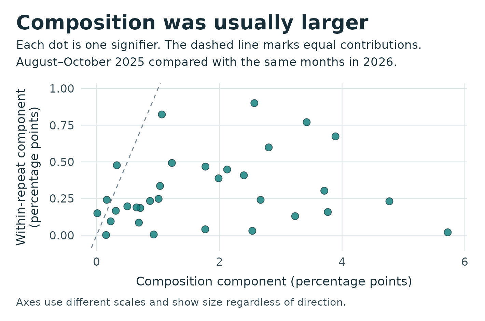

A daily study of the self
Changing answers and changing participants

When the share of people who say “artist” describes them goes up, the survey may have reached a different group of people, or people who answered before may be answering differently. I compared August through October 2025 with the same months in 2026 using Ipseity Daily, a survey that asks American adults whether a word or phrase describes them that day. Across 32 widely observed words or phrases, called signifiers, the part of the change associated with who answered averaged 1.84 percentage points in size. The part contributed by changes in answers from repeat respondents averaged 0.30 points.
Giving each respondent equal weight
The snapshot contains 793,108 completed answers. For this comparison, I kept signifiers with at least 400 respondents in each window and at least 100 who answered that signifier in both. These rules used participation counts alone. The resulting sample included 117,316 answers from 2,376 respondents across 3,739 respondent-days, with a respondent-day counting one person's survey participation on one date. Depending on the signifier, 158 to 167 of the same respondents answered in both windows.
Some people answered the same question on several dates. I averaged their answers within each window so that frequent participants had the same weight as everyone else who answered the question. Each signifier had its own denominator. The calculation used completed Yes or No answers, including those from respondents with missing demographic information. A question someone skipped or never received contributed no answer.
For each signifier, I first measured how the Yes rate moved among the people who answered in both windows. I then multiplied that change by the average share of respondents who answered in both, giving the repeat group a contribution proportional to its presence in the sample. The rest of the overall change was the composition component. It captures differences between the people who answered only in the earlier window and those who answered only in the later one, along with any shift in the share of respondents who answered in both. The two components add up to the overall change.
Composition was usually the larger component
Each dot in the chart represents one signifier. Both axes show the size of a component, regardless of whether it raised or lowered the Yes rate. Below the dashed line, composition is larger. That was the case for 29 of the 32 signifiers. Most of the composition component came from differences between the earlier-only and later-only respondents. Changes in the proportion who answered in both windows made a smaller contribution.
Composition accounted for 85.85% of the combined magnitudes of the two components. That share compares their sizes before they are added. The components pointed in opposite directions for 16 signifiers, so they could partly cancel. For example, “artist” had the largest observed increase, from 30.42% to 34.96%. The composition component added 4.77 points, while the changes among repeat respondents contributed a decline of 0.23 points.
People who answered in both windows represented about 13% of respondents for a typical signifier. Before weighting for that share, the average size of the Yes-rate change within the repeat groups was 2.32 points. The small contribution to the overall rate reflects the limited overlap between windows. A repeat group's net change can also hide people moving in opposite directions.
How much can we conclude?
I estimated uncertainty by resampling whole respondents, keeping all their answers together across signifiers and dates. The approximate 95% interval for composition's share of the combined magnitudes was wide, from 30.81% to 99.48%. That range includes cases where the repeat component is larger. At the level of individual signifiers, the 95% intervals that account for checking multiple estimates all included zero for the overall change.
The comparison uses the same months in both years to limit broad seasonal differences. The later window had observations on 86 dates, compared with 92 in the earlier window. The survey assigned questions in sets, and people could skip questions. Someone could therefore take part in both windows and still appear in the earlier-only or later-only group for a particular signifier. The composition component describes the mix of people who actually answered that question. It leaves open how either group would have answered in the other window.
These estimates describe the surveyed respondents, questions and dates. A different sample of American adults could give different answers. Even for the same person, a change in the answer to “Does this describe you today?” could reflect the circumstances that day or a longer-lasting shift in self-description.
Read the complete R analysis
#!/usr/bin/env Rscript
suppressPackageStartupMessages(library(tidyverse))
data_path <- Sys.getenv("IPSEITY_DATA_PATH", "data/ipseity.csv.gz")
responses <- read_csv(
data_path,
col_types = cols_only(
endorsed = col_integer(),
signifier = col_character(),
observation_date = col_date(),
hashed_respondent_id = col_character()
),
progress = FALSE,
lazy = FALSE
)
stop_for_problems(responses)
stopifnot(
!anyNA(responses),
all(responses$endorsed %in% c(0L, 1L)),
!anyDuplicated(select(responses, hashed_respondent_id, observation_date, signifier))
)
early_start <- as.Date("2025-08-01")
early_end <- as.Date("2025-10-31")
late_start <- as.Date("2026-08-01")
late_end <- as.Date("2026-10-31")
min_per_window <- 400L
min_in_both <- 100L
# Pick signifiers using counts of respondents, before looking at Yes rates.
windows <- responses |>
mutate(window = case_when(
between(observation_date, early_start, early_end) ~ "early",
between(observation_date, late_start, late_end) ~ "late"
)) |>
filter(!is.na(window))
support <- windows |>
distinct(signifier, hashed_respondent_id, window) |>
group_by(signifier, hashed_respondent_id) |>
summarise(
early = any(window == "early"),
late = any(window == "late"),
.groups = "drop"
) |>
group_by(signifier) |>
summarise(
early_people = sum(early),
late_people = sum(late),
paired_people = sum(early & late),
.groups = "drop"
)
eligible <- support |>
filter(early_people >= min_per_window, late_people >= min_per_window,
paired_people >= min_in_both) |>
arrange(signifier, .locale = "C")
stopifnot(nrow(eligible) > 0L)
analysis_rows <- semi_join(windows, eligible, by = "signifier")
respondent_windows <- analysis_rows |>
group_by(hashed_respondent_id, signifier, window) |>
summarise(rate = mean(endorsed), responses = n(), .groups = "drop")
# Each observed respondent contributes one rate per signifier and window.
# A missing window stays missing here. Zero-filled numerators below are used
# only alongside indicators that exclude unobserved windows from denominators.
person_items <- respondent_windows |>
pivot_wider(
names_from = window, values_from = c(rate, responses),
values_fill = list(responses = 0L)
) |>
mutate(
observed_early = !is.na(rate_early),
observed_late = !is.na(rate_late),
paired = observed_early & observed_late
)
signifiers <- eligible$signifier
people <- unique(person_items$hashed_respondent_id)
person_item_index <- cbind(
match(person_items$hashed_respondent_id, people),
match(person_items$signifier, signifiers)
)
person_matrix <- function(values) {
result <- matrix(0, nrow = length(people), ncol = length(signifiers))
result[person_item_index] <- values
result
}
person_statistics <- list(
early_n = person_matrix(person_items$observed_early),
late_n = person_matrix(person_items$observed_late),
paired_n = person_matrix(person_items$paired),
early_yes = person_matrix(coalesce(person_items$rate_early, 0)),
late_yes = person_matrix(coalesce(person_items$rate_late, 0)),
paired_early_yes = person_matrix(if_else(person_items$paired, person_items$rate_early, 0)),
paired_late_yes = person_matrix(if_else(person_items$paired, person_items$rate_late, 0))
)
# If q is the paired share, r the paired mean, and u the one-window mean,
# the overall Yes rate is q * r + (1 - q) * u. Expanding the difference
# symmetrically yields the three terms below, with bars denoting midpoints.
estimate_components <- function(totals) {
with(totals, {
early <- early_yes / early_n
late <- late_yes / late_n
paired_early <- paired_early_yes / paired_n
paired_late <- paired_late_yes / paired_n
only_early <- (early_yes - paired_early_yes) / (early_n - paired_n)
only_late <- (late_yes - paired_late_yes) / (late_n - paired_n)
share_early <- paired_n / early_n
share_late <- paired_n / late_n
paired_share <- (share_early + share_late) / 2
paired_change <- paired_late - paired_early
within <- paired_share * paired_change
one_window <- (1 - paired_share) * (only_late - only_early)
share_change <- (share_late - share_early) *
((paired_late + paired_early) / 2 - (only_late + only_early) / 2)
list(
early = early, late = late, change = late - early,
composition = one_window + share_change, within = within,
paired_change = paired_change, paired_share = paired_share,
one_window = one_window, share_change = share_change
)
})
}
observed <- estimate_components(map(person_statistics, \(x) matrix(colSums(x), nrow = 1)))
stopifnot(all(abs(observed$change - observed$composition - observed$within) < 1e-12))
# Resampling a person brings along all their observations in both windows
# and for every selected signifier, retaining dependence across estimates.
n_bootstrap <- 2500L
set.seed(20261119)
resample_counts <- replicate(
n_bootstrap,
tabulate(sample.int(length(people), replace = TRUE), nbins = length(people))
)
bootstrap <- estimate_components(map(person_statistics, \(x) crossprod(resample_counts, x)))
# Approximate simultaneous 95% intervals across the displayed item estimates.
# Scale each bootstrap error before taking the largest error in each draw.
confidence <- 0.95
measures <- c("change", "composition", "within", "paired_change")
errors <- map(measures, \(measure) {
sweep(bootstrap[[measure]], 2, as.numeric(observed[[measure]]), "-")
}) |>
set_names(measures)
bootstrap_sd <- map(errors, \(error) apply(error, 2, sd))
standardized_errors <- map2(errors, bootstrap_sd, \(error, scale) {
sweep(abs(error), 2, if_else(scale > 0, scale, 1), "/")
})
critical_value <- quantile(
apply(do.call(cbind, standardized_errors), 1, max),
probs = confidence, names = FALSE
)
half_width <- map(bootstrap_sd, \(sd) critical_value * sd)
# For each component, the error in its mean absolute magnitude is at most
# the mean absolute error across signifiers (triangle inequality). Estimate
# that error bound with the bootstrap and use Bonferroni for joint coverage
# of the two magnitudes, without treating signifiers as independent draws.
components <- c("composition", "within")
mean_magnitude <- map_dbl(observed[components], \(x) mean(abs(x)))
magnitude_radius <- map_dbl(errors[components], \(error) {
quantile(rowMeans(abs(error)), probs = (1 + confidence) / 2, names = FALSE)
})
magnitude_lower <- pmax(mean_magnitude - magnitude_radius, 0)
magnitude_upper <- mean_magnitude + magnitude_radius
composition_fraction <- function(composition, within) composition / (composition + within)
fraction <- composition_fraction(mean_magnitude[["composition"]], mean_magnitude[["within"]])
fraction_lower <- composition_fraction(magnitude_lower[["composition"]], magnitude_upper[["within"]])
fraction_upper <- composition_fraction(magnitude_upper[["composition"]], magnitude_lower[["within"]])
item_counts <- person_items |>
group_by(signifier) |>
summarise(
early_responses = sum(responses_early),
late_responses = sum(responses_late),
.groups = "drop"
)
item_results <- eligible |>
left_join(item_counts, by = "signifier")
for (measure in names(observed)) {
item_results[[measure]] <- as.numeric(observed[[measure]])
}
for (measure in measures) {
item_results[[paste0(measure, "_lower")]] <- item_results[[measure]] - half_width[[measure]]
item_results[[paste0(measure, "_upper")]] <- item_results[[measure]] + half_width[[measure]]
}
count_units <- function(data) {
c(
responses = nrow(data),
respondent_days = n_distinct(data$hashed_respondent_id, data$observation_date),
respondents = n_distinct(data$hashed_respondent_id),
dates = n_distinct(data$observation_date),
signifiers = n_distinct(data$signifier)
)
}
count_line <- function(label, data) {
counts <- count_units(data)
paste(c(label, paste0(names(counts), "=", counts)), collapse = "\t")
}
number <- function(x) {
formatted <- formatC(x, digits = 2, format = "f", decimal.mark = ".")
if_else(formatted == "-0.00", "0.00", formatted)
}
percent <- function(x) number(100 * x)
range_line <- function(label, x) {
paste(label, min(x), max(x), sep = "\t")
}
interval_line <- function(label, point, lower, upper) {
paste(label, percent(point), percent(lower), percent(upper), sep = "\t")
}
increase <- slice_max(item_results, change, n = 1, with_ties = FALSE)
decrease <- slice_min(item_results, change, n = 1, with_ties = FALSE)
report <- c(
"Year-over-year changes in the share answering Yes",
paste("Snapshot dates", min(responses$observation_date), max(responses$observation_date), sep = "\t"),
count_line("Snapshot", responses),
paste("Early window", early_start, early_end, sep = "\t"),
paste("Late window", late_start, late_end, sep = "\t"),
paste("Eligibility: minimum respondents per window", min_per_window, sep = "\t"),
paste("Eligibility: minimum respondents answering both windows", min_in_both, sep = "\t"),
paste("Eligible signifiers", length(signifiers), sep = "\t"),
count_line("Eligible signifiers, both windows", analysis_rows),
count_line("Eligible signifiers, early window", filter(analysis_rows, window == "early")),
count_line("Eligible signifiers, late window", filter(analysis_rows, window == "late")),
paste("Bootstrap draws and confidence level (%)", n_bootstrap, percent(confidence), sep = "\t"),
"",
"Per-signifier count ranges (minimum, maximum)",
range_line("Early responses", item_results$early_responses),
range_line("Late responses", item_results$late_responses),
range_line("Early respondents", item_results$early_people),
range_line("Late respondents", item_results$late_people),
range_line("Respondents answering the same signifier in both windows", item_results$paired_people),
range_line("Early-only respondents", item_results$early_people - item_results$paired_people),
range_line("Late-only respondents", item_results$late_people - item_results$paired_people),
paste("Midpoint paired share (%, median, minimum, maximum)",
percent(median(item_results$paired_share)), percent(min(item_results$paired_share)),
percent(max(item_results$paired_share)), sep = "\t"),
"",
"Across-signifier summaries (percentage points unless marked %)",
paste("Mean absolute overall change", percent(mean(abs(item_results$change))), sep = "\t"),
paste("Mean absolute change in paired respondents before weighting",
percent(mean(abs(item_results$paired_change))), sep = "\t"),
"Mean absolute component (estimate, simultaneous lower and upper bounds)",
interval_line("Composition", mean_magnitude[["composition"]],
magnitude_lower[["composition"]], magnitude_upper[["composition"]]),
interval_line("Within-repeat", mean_magnitude[["within"]],
magnitude_lower[["within"]], magnitude_upper[["within"]]),
interval_line("Composition share of summed mean absolute components (%)",
fraction, fraction_lower, fraction_upper),
paste("Signifiers with larger absolute composition component",
sum(abs(item_results$composition) > abs(item_results$within)), sep = "\t"),
paste("Signifiers with components pointing in opposite directions",
sum(item_results$composition * item_results$within < 0), sep = "\t"),
paste("Overall changes with simultaneous intervals excluding zero",
sum(item_results$change_lower > 0 | item_results$change_upper < 0), sep = "\t"),
paste("Mean absolute contribution from different one-window respondents",
percent(mean(abs(item_results$one_window))), sep = "\t"),
paste("Mean absolute contribution from a change in the paired share",
percent(mean(abs(item_results$share_change))), sep = "\t"),
paste("Largest overall increase", increase$signifier, sep = "\t"),
paste("Largest overall decrease", decrease$signifier, sep = "\t"),
"",
paste(
"Per-signifier results. Rate and share columns are percentages. Changes and components",
"are percentage points, with simultaneous lower and upper bounds where shown."
)
)
result_table <- item_results |>
select(
signifier, early_responses, late_responses, early_people, late_people, paired_people,
early, late, paired_share, change, change_lower, change_upper,
composition, composition_lower, composition_upper, within, within_lower, within_upper,
paired_change, paired_change_lower, paired_change_upper, one_window, share_change
) |>
mutate(across(early:share_change, percent))
writeLines(
c(report, paste(names(result_table), collapse = "\t"),
do.call(paste, c(result_table, sep = "\t"))),
"results.txt"
)
plot_data <- item_results |>
transmute(signifier, composition = 100 * abs(composition), within = 100 * abs(within))
plot <- ggplot(plot_data, aes(x = composition, y = within)) +
geom_abline(slope = 1, intercept = 0, colour = "#748591", linetype = "dashed") +
geom_point(size = 3.2, shape = 21, fill = "#087C78", colour = "#15373C", alpha = 0.8) +
scale_x_continuous(expand = expansion(mult = c(0.045, 0.055))) +
scale_y_continuous(expand = expansion(mult = c(0.12, 0.15))) +
labs(
title = "Composition was usually larger",
subtitle = paste0(
"Each dot is one signifier. The dashed line marks equal contributions.\n",
"August–October 2025 compared with the same months in 2026."
),
x = "Composition component (percentage points)",
y = "Within-repeat component\n(percentage points)",
caption = "Axes use different scales and show size regardless of direction."
) +
coord_cartesian(xlim = c(0, NA), ylim = c(0, NA)) +
theme_minimal(base_size = 15) +
theme(
text = element_text(colour = "#172D37"),
panel.grid.minor = element_blank(),
panel.grid.major = element_line(colour = "#DEE7E8", linewidth = 0.4),
plot.background = element_rect(fill = "#FFFFFF", colour = NA),
plot.title.position = "plot",
plot.title = element_text(size = 21, face = "bold", margin = margin(b = 7)),
plot.subtitle = element_text(size = 12.5, lineheight = 1.2, margin = margin(b = 16)),
axis.title = element_text(size = 13),
axis.title.y = element_text(margin = margin(r = 9)),
axis.title.x = element_text(margin = margin(t = 9)),
axis.text = element_text(colour = "#334A55"),
plot.caption.position = "plot",
plot.caption = element_text(size = 11, hjust = 0, colour = "#334A55", margin = margin(t = 11)),
plot.margin = margin(16, 19, 14, 17)
)
ggsave("visualization.png", plot, width = 7.1, height = 4.7, dpi = 200, bg = "#FFFFFF")
Original research prompt
For widely observed signifiers, how much of the change over calendar time reflects changing participant composition versus changes within repeat participants?
Dataset SHA-256: 9d876e7755198144adcb39b2ad5bee754fa2ec9f5d1ebbf3078bfe2fe4d546af